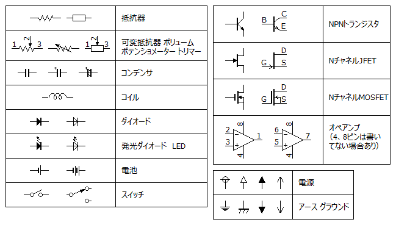
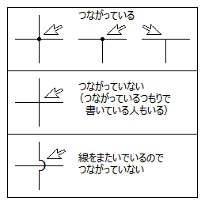
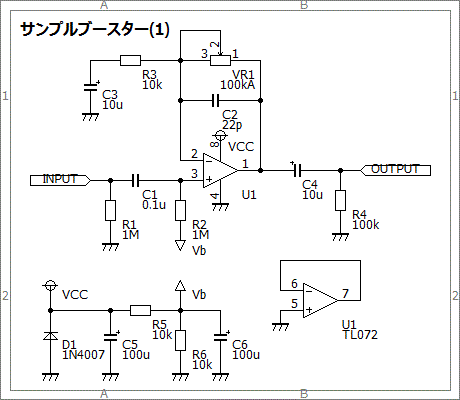
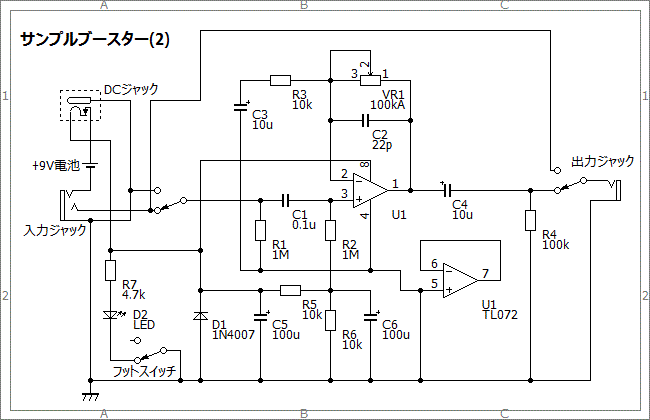

私のエフェクター自作方法【2+】回路図の見方
2008年11月21日 カテゴリー：私のエフェクター自作方法
回路図には部品同士がどのようにつながっているかが示されています。
以下にエフェクター回路図で出てくる主な記号を示します。

電源はVccやVb、アース（グラウンド）はGNDと併記している場合があります。回路図は自己流で描かれていることが多いので、この他にも独特のシンボルが使われていますが、大体見た目や部品の型番でわかると思います。
基本的に音の信号が左上から右下に向かっていきます。線がつながっているところには点を打ちますが、打ち忘れていることがあります。特に十字に交差しているときは注意が必要です。

下図は簡単なブースターの回路図です。

実際には電源やアースもつながっています。できるだけ詳しくトゥルーバイパスで回路図を描くと下図のようになります。

ゴチャゴチャしてしまうためこのような回路図を描くことはあまりありません。部品レイアウトを描く際には、実際はつながっている部分を頭の中でイメージしていきます。
【2++】部品レイアウトの描き方はこちら
（2016年9月更新）